Префектура Гумма · Ота · архитектура
Музей и библиотека Оты: белый холм из книг, искусства и пандусов у самой станции
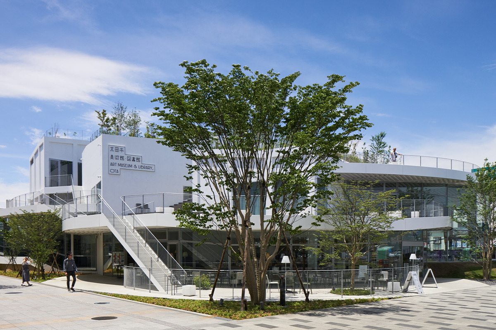
Ота на юго-востоке префектуры Гумма со времён модернизации страны живёт производством. В 2017 году у станции открылся Художественный музей и библиотека Оты: в нём можно за один визит посмотреть современное искусство, полистать книжки с картинками со всего мира и посидеть на скамейке, сделанной на местном заводе.
Идея
Площадка для знаний и вкуса
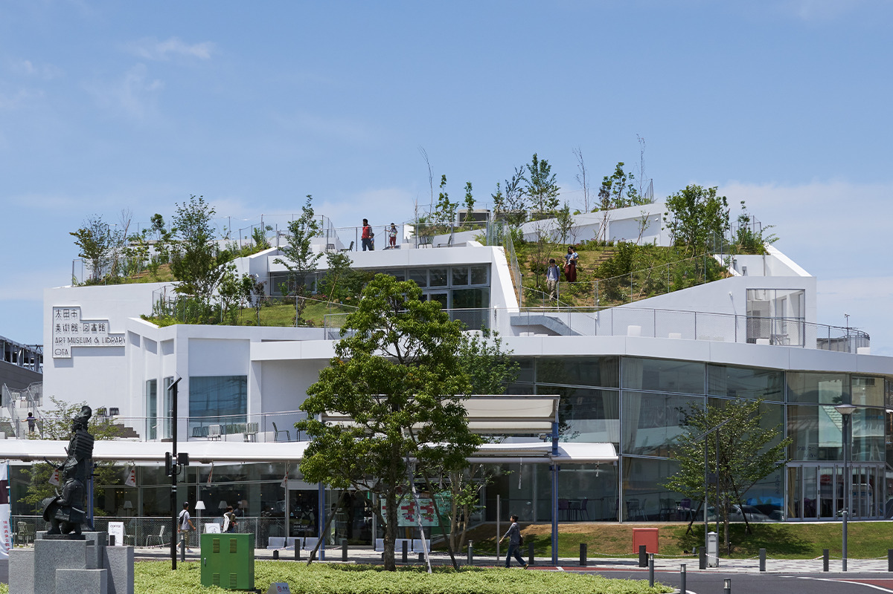
Ота выросла как город производства, и всё, что здесь накопили за долгие годы работы на заводах, решили передать дальше через одно общественное место. Художественный музей и библиотека Оты открылся в январе 2017 года и задуман как опора для горожан, которые сами меняют свой город.
Под одной крышей здесь соединили две вещи. Музей показывает работы, которые будят воображение смелыми идеями, а библиотека даёт широкий запас знаний, из которого эти идеи вырастают. Смотреть искусство и читать можно в один заход, а вокруг здания идут проекты, которые оживляют центр города.
Архитектура
Здание без границ
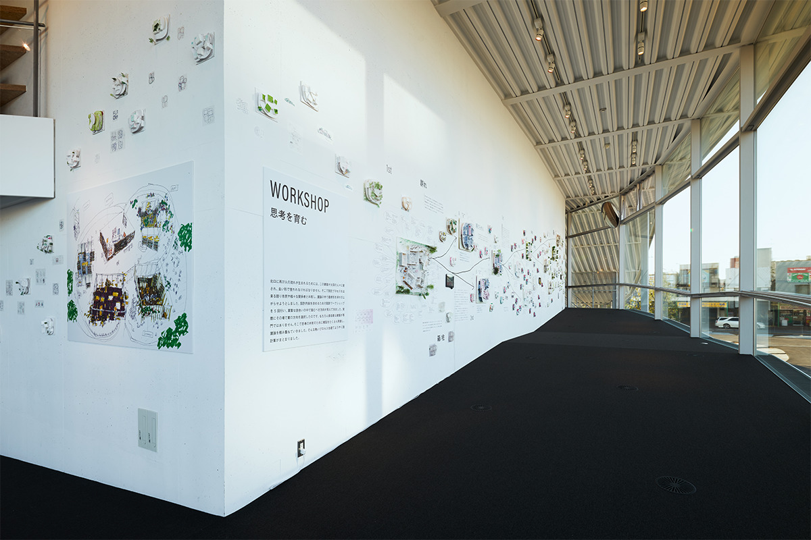
Проект в марте 2014 года по открытому конкурсу получил архитектор Акихиса Хирата. Прежде чем утвердить облик здания, пять месяцев шли мастерские с жителями Оты: здание придумывали вместе с ними.
Здание состоит из пяти коробок из железобетона, каждая размером примерно с соседние дома, а вокруг них по кругу вьётся стальной пандус. На крыши коробок насыпали толстый слой земли и посадили растения. Здания и зелень, искусственное и природное перемешаны так, что получается холм. Он похож на холмы, которых в Оте немало, такие как гора Канаяма или древний курган Тэндзинъяма.
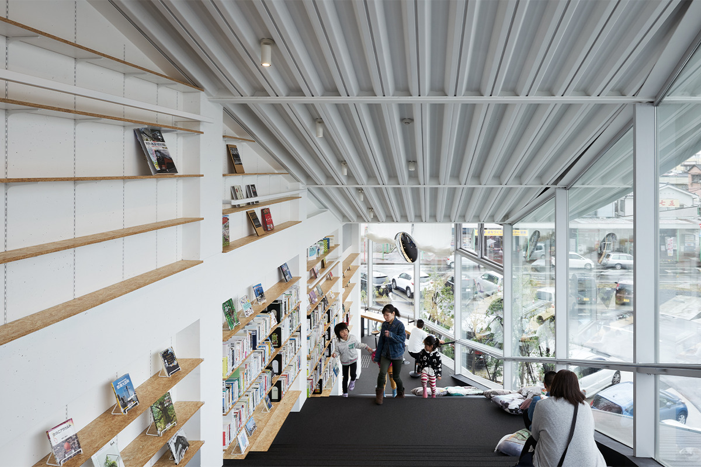
Входов три, с востока, юга и запада, так что войти и пройти здание насквозь можно с любой стороны. Всё соединено плавными пандусами, и на третий этаж поднимаешься почти незаметно.
Внутри несколько коробок с разным характером: галерея, кафе, тихие места для чтения и занятий. Каждый находит угол, где ему удобно, и проводит там своё время. Если пройтись между коробками, взгляд всё время убегает в разные стороны, за поворотом видно место, куда хочется заглянуть, и можно наткнуться на что-то неожиданное.
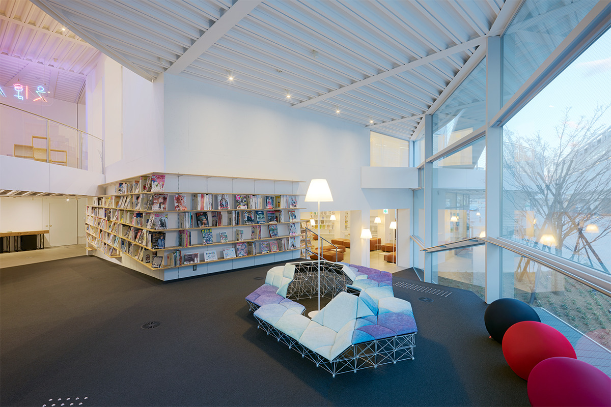
Скамейки и диваны на решётчатых ножках, светильники и книжные полки расставлены по всему зданию. Их сделала «Эй-ай лабо Ота», объединение людей с заводов Оты, которые работают в разных отраслях. Для мягких сидений, например, взяли технологию, которой делают автомобильные кресла. Так горожане участвовали не только в проекте здания, но и в его мебели.
Снаружи есть терраса, где можно читать, а на крышах коробок растёт трава. Можно отдохнуть на этом лугу в пятнистой тени деревьев, а сверху видны город и гора Канаяма. Форма здания в плане напоминает пропеллер самолёта. Благодаря ей внутрь легко войти, а ещё она работает с сильными ветрами, которыми известна Ота: ветер впускают внутрь в нужной мере, и по залам идёт приятный поток воздуха, а заодно здание бережнее к окружающей среде.
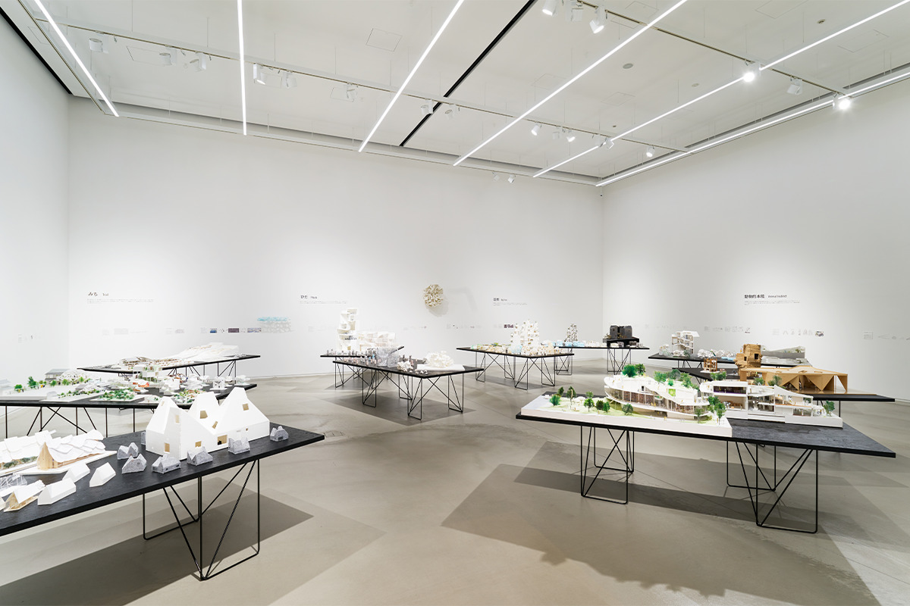
Музей состоит из трёх залов разной высоты. В них помещаются самые разные работы, мастерские и другие проекты художников. Пандус между первым и вторым залами вместе с винтовой лестницей можно превратить в одну необычную галерею.
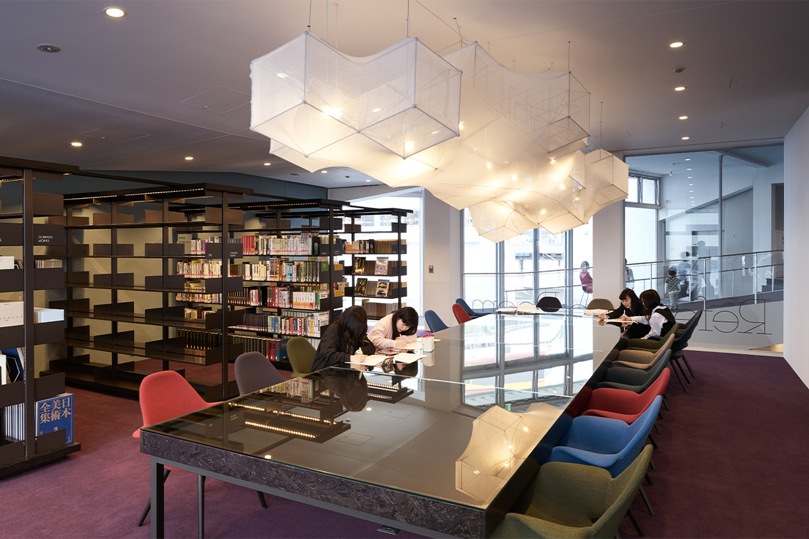
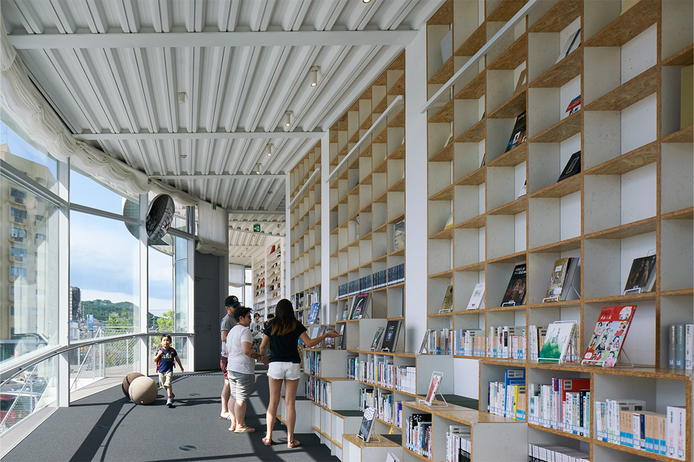
Полки в библиотеке подогнаны под размер книг и потому все разные. На первом этаже, в зоне свежей прессы, можно расположиться на мягких диванах. Между первым и вторым этажами можно сесть прямо на полку или читать в окружении стеллажей, похожих на облака. Справочный зал на третьем этаже собран вокруг большого стола со стеклянной столешницей, под которой выставляют ценные материалы; здесь читают в тишине.
Собрание
Лучшее со всего мира
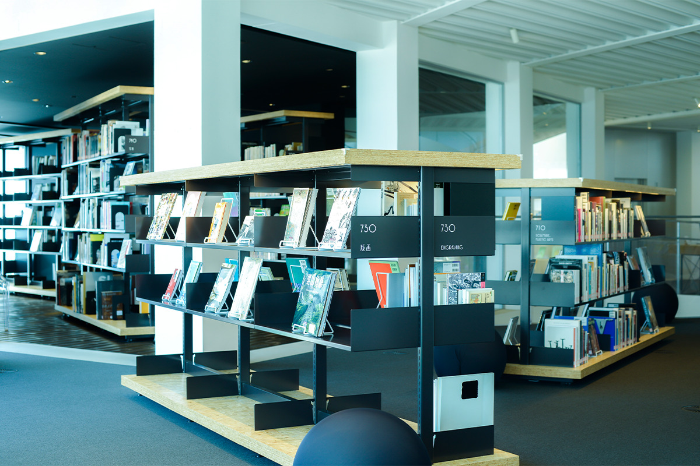
Музей устраивает выставки в основном современного искусства и строит их так, чтобы раскрыть необычные залы. Он собирает и изучает культуру и искусство, выросшие в Оте, и привозит выставки, на которых можно встретить самые свежие идеи со всего мира.
Главная особенность библиотеки в книжках с картинками и детских книгах. Больше 17 000 книжек с картинками, детских и иностранных книг из более чем 60 стран, начиная с лауреатов премии Ханса Кристиана Андерсена, привезли сюда из-за моря. Незнакомые алфавиты и книги, в которых отразились далёкие края, открывают дверь в разнообразный мир.
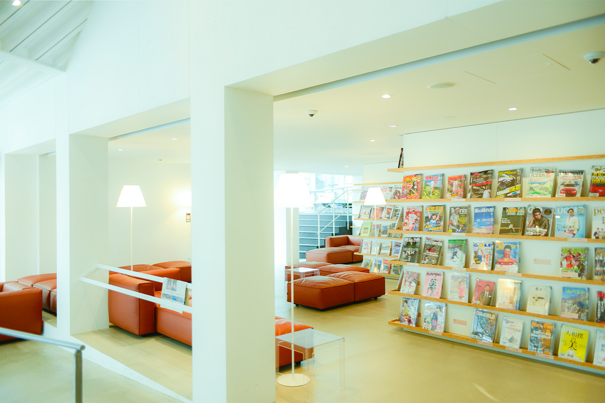
Альбомов по искусству здесь около 12 000. Это работы важных японских и зарубежных авторов и тех, кто сегодня задаёт тон в мире, разложенные по жанрам: живопись, фотография и другие. В зоне свежей прессы по всему пространству расставлено около 250 японских и зарубежных журналов об искусстве, архитектуре и творческом образе жизни.
Из книг, которые хранятся в магазинах, конторах и домах Оты, сложилась «библиотека по всему городу». Каждое участвующее место становится её отделением, там лежат любимые книги его «директора». Жители и гости берут их свободно и заодно разговаривают с хозяином полки.
Кафе
Coffee & Th!ngs Oh!
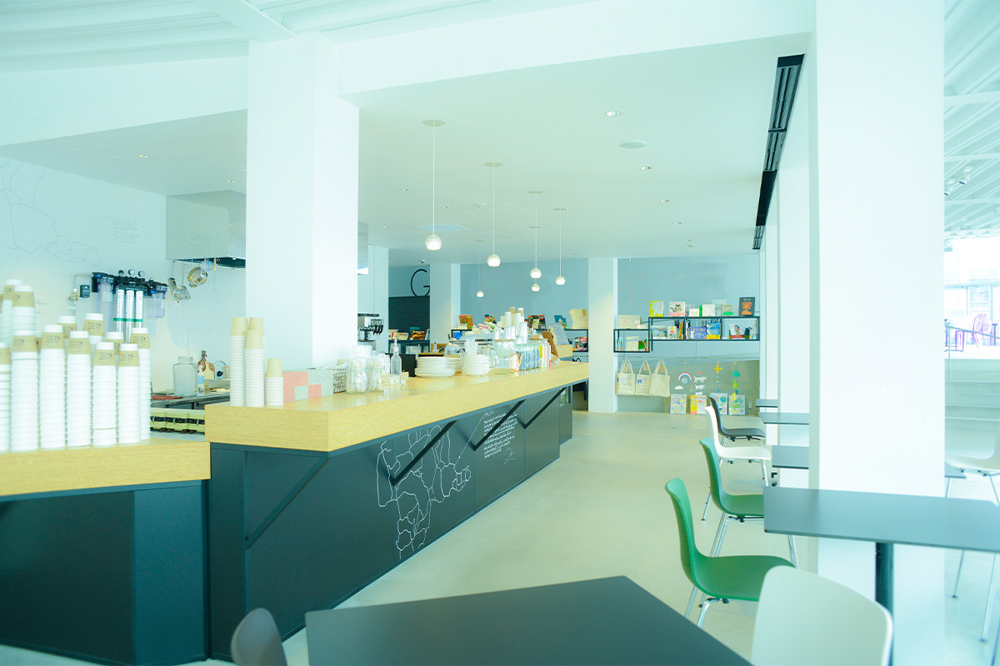
В кафе Coffee & Th!ngs Oh! стараются найти в Оте то, что удивит. Девиз кафе: местное для местных, поэтому многое готовят сами и берут продукты из Оты. Мягкое мороженое делают на молоке «Томо ракуно 63 °C», которое молочный кооператив Оты пастеризует при низкой температуре. Это ещё и сувенирная лавка у станции: через искусство и дизайн она предлагает вещи, которые есть только в Оте, городе мастеров.
Приезжайте в Оту за городом и архитектурой, а заодно за свежим взглядом на искусство со всего мира.
Художественный музей и библиотека Оты
- Адрес
- префектура Гумма, Ота, Хигаси-Хонмати, 16-30
- Часы работы
- 10:00–20:00 (в воскресенье и праздники до 18:00)
- Выходные
- понедельник (если праздник, то следующий день)
- Как добраться
- у станции Ота
Фото: Дайти Ано, Ёити Онода.